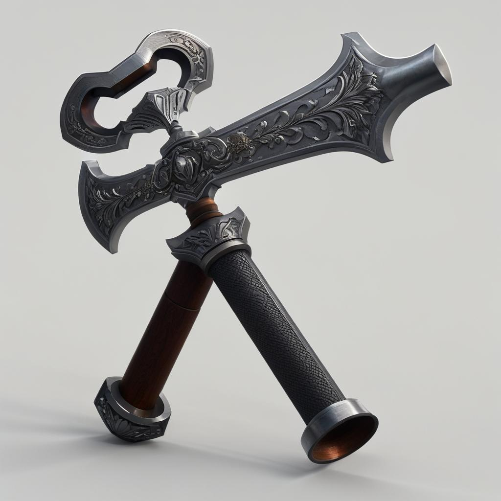
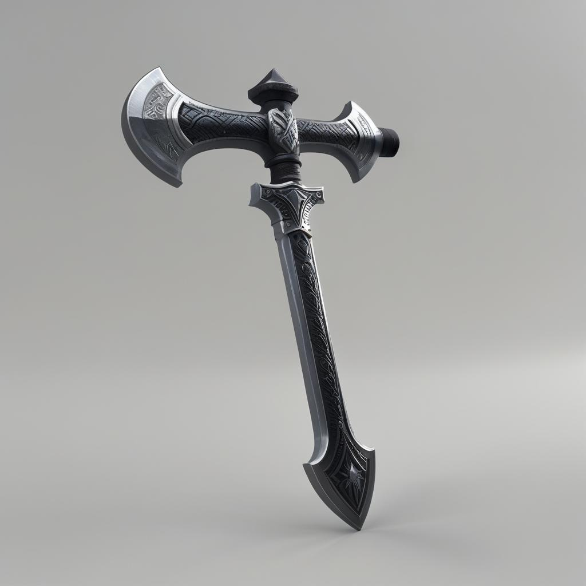
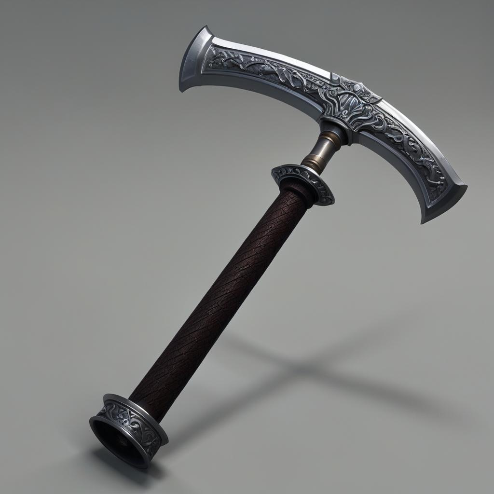
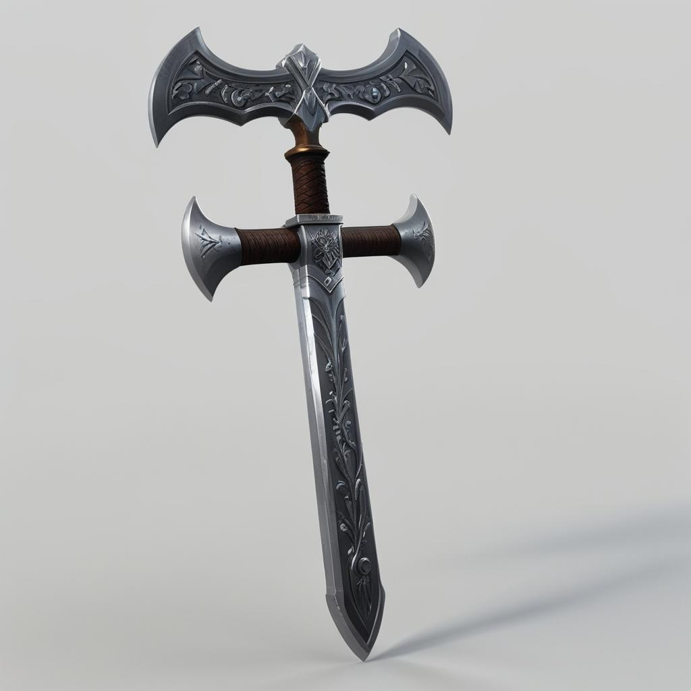
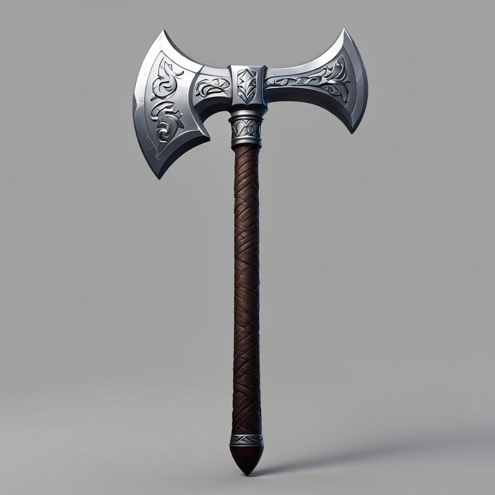
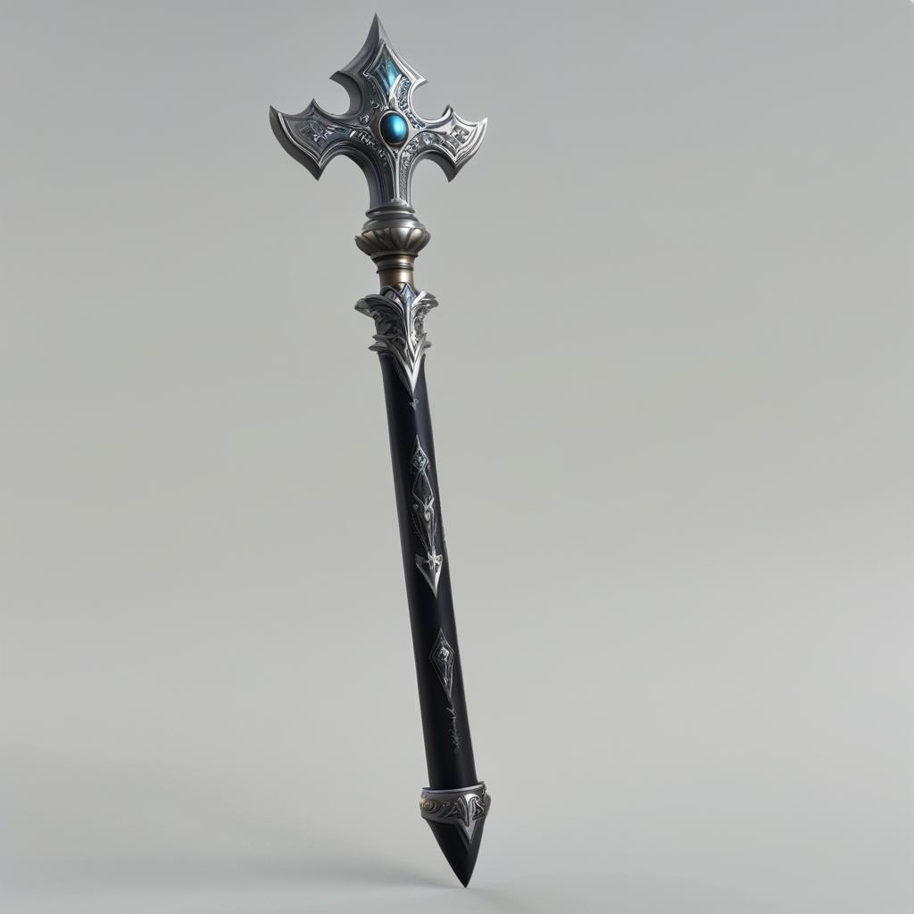
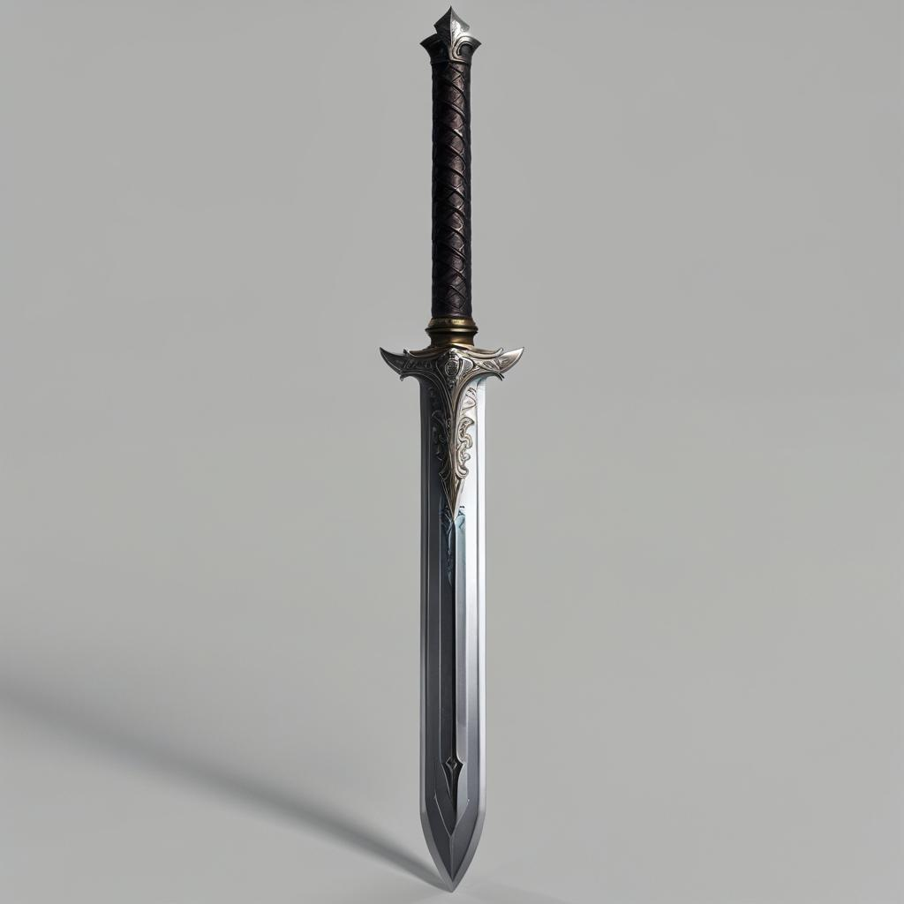
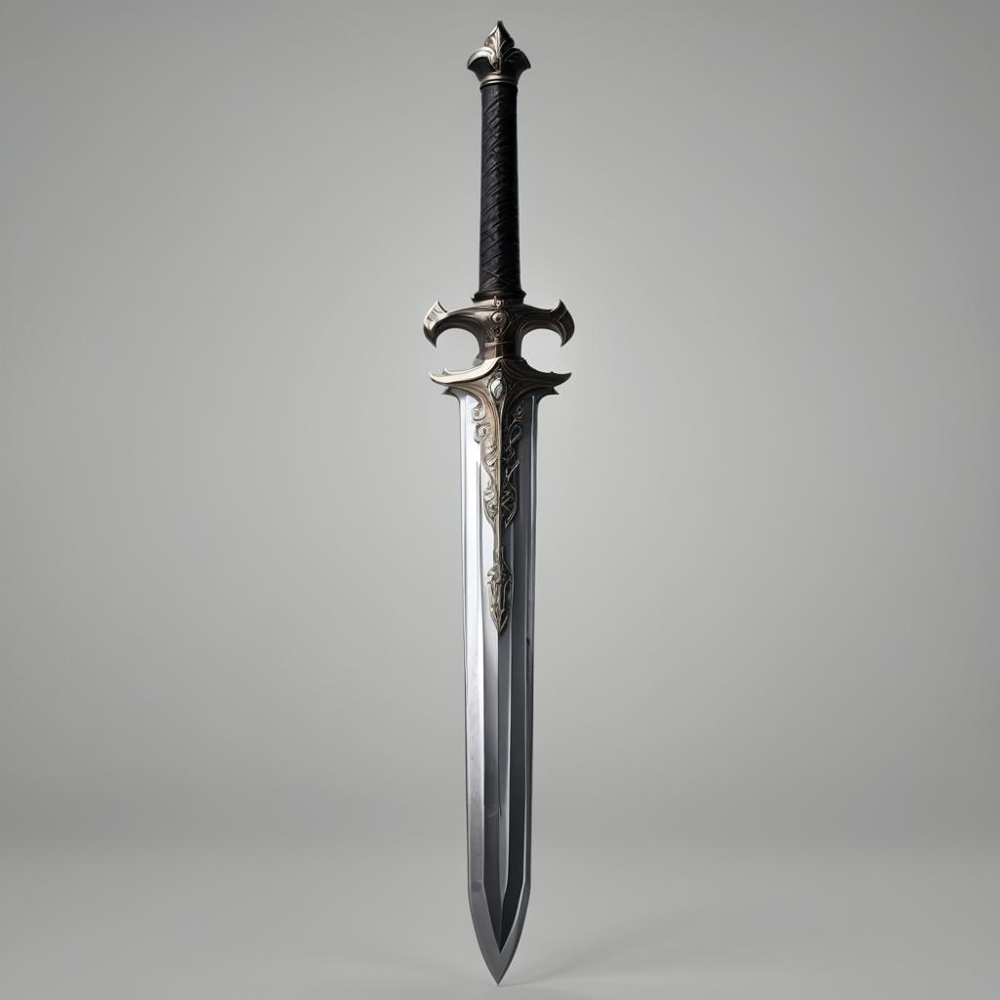

Stable Diffusion for Game Assets
By Dominik Ptaszek
Introduction
This project focuses on the application of the Stable Diffusion model to generate detailed game assets. The main goal was to fine-tune the model to optimize it for creating items, characters, and objects specifically designed for game development.
For a detailed walkthrough of my project, see my project colab notebook.
or
project source file on Github Repo.
Methodology
- Study of diffusion models.
- Selection of a fine-tuning method.
- Creation of a game assets dataset.
- Fine-tuning the Stable Diffusion model with the dataset.
- Evaluation of results and iterative improvements.
Results
This project achieved remarkable success in fine-tuning a Stable Diffusion model to generate high-quality game assets, optimized specifically for game development environments. The key aspects of the project are detailed below:
- Hardware Utilization: The training was conducted on a Tesla T4 GPU on Google Colab platform, leveraging its high computational power to handle complex model training with a significant dataset.
- Deep Learning Libraries: Advanced deep learning libraries such as PyTorch, Hugging Face's Transformers, and Accelerate were employed. These libraries provided a robust framework for model training and optimization.
- Model Choice and Fine-Tuning Techniques: The foundational model for this project was the pre-existing Stable Diffusion model, renowned for its capability to generate detailed images from text descriptions. For fine-tuning, two advanced techniques were employed - Lora (Low-Rank Adaptation) and DreamBooth. Lora is a novel approach that adapts a pre-trained model with minimal additional parameters, making it efficient and effective for fine-tuning without extensive retraining. This technique was instrumental in adjusting the model's parameters to better cater to the specifics of game asset generation. On the other hand, DreamBooth further refined the model's ability to generate game assets by personalizing the generation process. It involves training the model on a small set of target-specific images, allowing it to create new images that are similar in style and content. This dual approach of using Lora and DreamBooth provided a robust fine-tuning strategy, enabling the generation of highly specialized and contextually relevant game assets.
- Fine-Tuning Approach: The model underwent extensive fine-tuning using a curated dataset of game assets. This process involved adjusting the model's parameters specifically for generating items, characters, and objects relevant to game design.
- Custom Dataset: A diverse dataset comprising various game asset categories was created. This dataset played a crucial role in guiding the model to understand and generate game-specific visuals effectively.
- Quality of Generated Assets: The fine-tuned model demonstrated an exceptional ability to generate unique and visually appealing game assets. These assets showcased a blend of creativity and intricacy, fitting seamlessly into various game environments.
- Model Evaluation: Post-training, the model's output was rigorously evaluated for quality, uniqueness, and relevance to game asset requirements. This process ensured the practical applicability of the generated assets in real-world game development.
The convergence of these elements culminated in a fine-tuned Stable Diffusion model that stands as a testament to the potential of AI in creative industries like game development.
Image Gallery

Silver Axe - Design 1

Silver Axe - Design 2

Silver Axe - Design 3

Silver Axe - Design 4

Silver Axe - Design 5

Silver Staff - Design 1

Silver Staff - Design 2

Silver Sword - Design 1

Silver Sword - Design 2

Silver Sword - Design 3